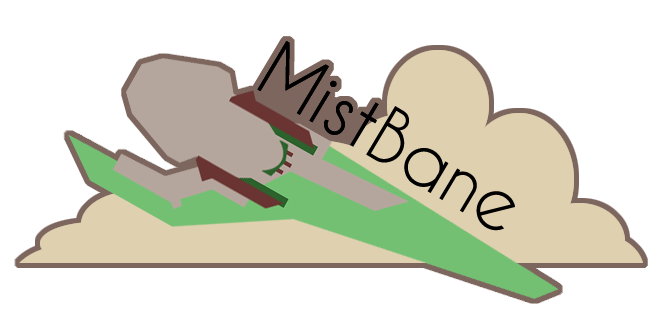
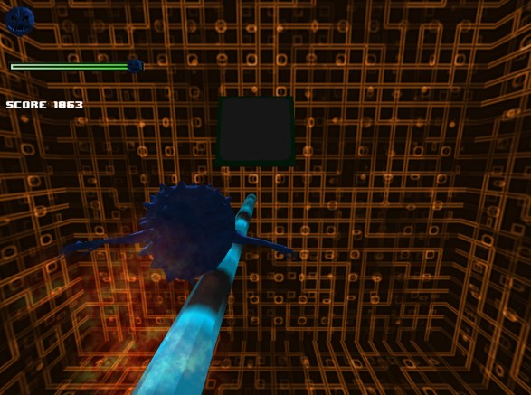

Portfolio
Here you can check out some of the work I've done through the Video Game Specialization at Michigan State University.
MistBane

The mists have returned and the peaceful island village you are from is under seige. Armed with a mystical gauntlet, only you have the power to restore the lighthouse to its former glory and banish the mist for good. Embark on an epic adventure accross four islands. Delve into dangerous dungeons to power up your gauntlet and find the scattered pieces of the lighthouse!
Techidemic

Techidemic is a fast paced action game where you play as a computer virus powerful enough to take down a software security company. Like any virus, you move through a system wreaking havok while avoiding security measures. Move fast and dodge circuit breakers and resistors while destroying as many folders, programs and CPU's as possible.
Songbird

Songbird is a musical rhythm game where you play as the Songbird, the apointed animal conductor of spring time! It is up to you to train the Blue Jay, Cardinal, and Goldfinch to sing at their very best in order for them to be ready for the spring choir. Can you handle conducting three birds at once?